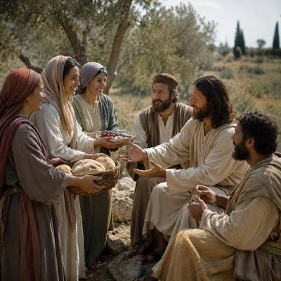

Resulta muy común en el cristianismo imaginar a Jesús y sus doce «apóstoles» recorriendo los caminos de Galilea y Judea predicando despreocupadamente, como si el alimento apareciera milagrosamente a la hora del almuerzo, y las sandalias se repararan por intervención divina. Sin embargo, esto plantea una pregunta que los cristianos prefieren no hacerse: ¿De qué vivieron estos trece hombres durante los aproximadamente tres años de divulgación de su mensaje?


Según la Biblia, «Dios» condenó al ser humano a ganarse el pan «con el sudor de su frente» (Génesis 3:19); pero esta maldición no parece haberse cumplido en todos los casos. A lo largo de la historia, siempre ha habido personas que han vivido del trabajo y sudor de otros, a quienes han convencido de creer en ciertas ideas. Suelen autodenominarse maestros, sacerdotes, pastores, levitas, rabinos, profetas, chamanes, monjes, imanes o gurús. Y es una actividad que siempre ha encontrado formas de funcionar, sin que sus protagonistas tengan que maltratar sus manos ni hacer sudar su frente.
En el caso de Jesús, los evangelios mencionan que su padrastro José era tekton (Marcos 6:3; Mateo 13:55), término griego que se traduce como carpintero o constructor. Y en la sociedad judía del siglo I, los niños comenzaban desde los seis o siete años a colaborar con el trabajo familiar. Asistían a la sinagoga por las mañanas para aprender la Torá, pero por las tardes ayudaban en el taller o el campo. Por lo que resulta razonable pensar que Jesús haya aprendido y practicado el mismo oficio de su padrastro durante esa etapa. Sin embargo, en algún momento de su vida decidió que su vocación no estaba en las actividades manuales que tenía que realizar la mayoría, resultándole más atractivo el oficio de predicador ambulante. Y los evangelios lo muestran sólo enseñando, predicando, «sanando», discutiendo con fariseos y recorriendo aldeas.
Algo similar habría ocurrido con sus discípulos: Pedro, Andrés, Santiago y Juan eran pescadores, mientras que Mateo había sido recaudador de impuestos. Los demás, habrían desempeñado oficios propios de la economía galilea. Pero tras unirse a Jesús, ya no se les ve siquiera realizando trabajos temporales entre una predicación y otra para sostener al grupo. No se les ve pescando para vender ni cultivando la tierra. La impresión que transmiten los textos es que se dedicaron exclusivamente a la acompañar a Jesús… ¿Y sus familias? Pues, allí quedaron. Ellos sí, ganándose el pan con el sudor de su frente.
Sin embargo, Jesús y su grupo no podían «vivir del aire». Necesitaban financiamiento. ¿Y cómo lo obtuvieron? Bueno, el ambiente les fue favorable. Resulta que durante el siglo I en el Mediterráneo oriental abundaban los filósofos itinerantes, profetas populares, predicadores apocalípticos y maestros religiosos. Además, por la influencia helenística, había también filósofos cínicos y estoicos que recorrían ciudades enseñando doctrinas morales. Y todos dependían de la hospitalidad de quienes simpatizaban con sus ideas.
Y obviamente, Jesús adoptó ese modelo. Incluso cuando consideró que sus discípulos estaban preparados para predicar su mensaje, les ordenó no llevar dinero, provisiones ni equipaje adicional, sino permanecer en las casas de quienes los recibieran (Mateo 10:9-11; Marcos 6:8-10; Lucas 10:4-7). Hasta les dijo Jesús en esa ocasión: «El obrero es digno de su salario» (Lucas 10:7), dando a entender que predicar constituía un trabajo que merecía ser remunerado. ¡Qué conveniente! ¡Qué comodidad!
Sin embargo, la referencia más explícita sobre el financiamiento del grupo aparece en Lucas 8:1-3 —un pasaje que los cristianos prefieren no leer— donde se revela que varias mujeres que acompañaban a Jesús y a los Doce, «les servían con sus bienes». Mencionándose concretamente a María Magdalena, Juana —esposa de un tal Chuza, administrador de Herodes Antipas—, Susana y «muchas otras»… Sí, ¡muchas otras mujeres los mantenían! Y no se trataba de «ayuda simbólica», sino de recursos económicos destinados a sostener aquel nómada estilo de vida.
El detalle resulta especialmente interesante, por tratarse de una sociedad fuertemente patriarcal, donde las mujeres enfrentaban importantes limitaciones legales y sociales. Sin embargo, algunas podían disponer de patrimonio mediante herencias, dotes matrimoniales (ketubá), o bienes compartidos con sus esposos. Y en este sentido, el caso de Juana es significativo, ya que su esposo ocupaba un cargo de confianza dentro de la administración romana, lo que sugiere una posición económica acomodada.
Es obvio que, sin aquellos recursos, habría sido imposible mantener por tres años un grupo de trece improductivos hombres viajando continuamente. La comida, el alojamiento, la ropa, las sandalias y los desplazamientos, requerían financiamiento, y los evangelios muestran que procedía en parte de la hospitalidad de los simpatizantes, pero principalmente del apoyo económico de aquellas mujeres, entre las cuales destaca María Magdalena, de quien Lucas afirma que Jesús había expulsado «siete demonios» (Lucas 8:2), por lo que, por agradecimiento, habría contribuido con los gastos de aquellos hombres. Hay que comprender que una supersticiosa mujer que se sentía liberada no sólo de inexistentes «demonios», sino también de la estigmatización social que eso implicaba, debió haberse sentido muy agradecida.
Aunque también hay que considerar otro detalle: si bien los evangelios canónicos no mencionan mucho sobre esta mujer, algunos textos apócrifos la representan ocupando un lugar privilegiado entre los discípulos. El llamado Evangelio de Felipe llega incluso a mencionar que Jesús la besaba frecuentemente… Aunque el manuscrito copto presenta una perforación precisamente en ese sitio, algunos deducen que la frase completa decía que Jesús la besaba frecuentemente en la boca. Se trata, sin embargo, de un pergamino escrito hacia el siglo III, por lo que no constituye un testimonio directo sobre la vida de Jesús.
De cualquier forma, lo esencial aquí es que el movimiento de Jesús necesitaba un importante sustento material para poder funcionar, y en aquella época era común que filósofos cínicos, maestros religiosos y predicadores itinerantes fueran sostenidos por discípulos, benefactores y simpatizantes. Era un sistema aceptado y conocido en el mundo antiguo, lo cual desmonta cualquier imagen idealizada de un Jesús que se mantenía de forma milagrosa. Lo inaceptable es que todavía siga aplicándose, de otras formas, el mismo modelo de sostenimiento de personas improductivas, en nuestras sociedades modernas.
En fin, quizás ahora comprendamos por qué era tan fácil para Jesús, desde su cómoda posición, mantenido por mujeres acaudaladas, aconsejar a los demás: «No os afanéis por vuestra vida, qué habéis de comer o qué habéis de beber; ni por vuestro cuerpo, qué habéis de vestir» (Mateo 6:25). Sin embargo, la realidad demostró que hasta la divulgación de su mensaje no se resolvió con maná caído del cielo, sino que necesitó de un financiamiento muy terrenal. Y quizás esa sea una de las ironías más interesantes del cristianismo.
[Godless Freeman]
Comentarios
Comments powered by Disqus